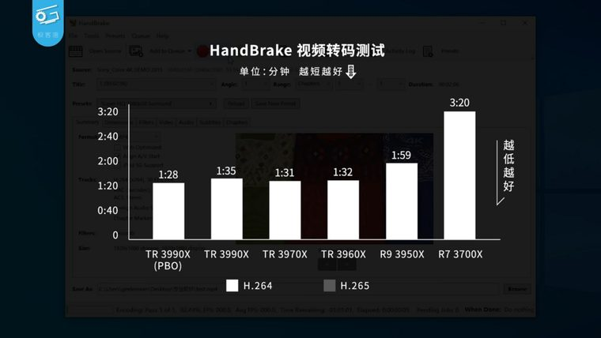

[ SERVER AND WORKSTATION PROCESSORS // IDENTIFIED PROCESSOR ]
AMD Ryzen Threadripper 3990X
The 3990X is a 64-core HEDT workstation processor in AMD’s sTRX4 platform, bringing 128 threads and 256 MB of L3 cache to a single socket.

MODEL IDENTIFICATION: AMD Ryzen Threadripper 3990X. Compare the printed part number, speed grade, package, cache configuration, and stepping with the cited documentation; do not transfer one variant’s limits to another.
Recorded specifications
| Cataloged part | AMD Ryzen Threadripper 3990X |
|---|---|
| Era / family | 3rd Generation Ryzen Threadripper / Castle Peak, launched 2020; 3990X. |
| Key specifications | 64 cores / 128 threads; 2.9 GHz base, up to 4.3 GHz boost; 256 MB L3; 280 W default TDP; sTRX4; quad-channel DDR4-3200; 64 PCIe 4.0 lanes. |
| Interface / fit | Requires sTRX4 TRX40 motherboard and BIOS support. sTRX4 is not electrically compatible with earlier Socket TR4 boards despite similar package dimensions; confirm cooler, VRM and high-current delivery. |
| Variant distinction | 3990X is a single-socket workstation/HEDT part, not EPYC; it lacks EPYC’s socket/platform memory-channel and server feature configuration. Maximum boost depends on workload and thermal/power conditions. |
Compatibility and variants
- Requires sTRX4 TRX40 motherboard and BIOS support. sTRX4 is not electrically compatible with earlier Socket TR4 boards despite similar package dimensions; confirm cooler, VRM and high-current delivery.
- 3990X is a single-socket workstation/HEDT part, not EPYC; it lacks EPYC’s socket/platform memory-channel and server feature configuration. Maximum boost depends on workload and thermal/power conditions.
- Confirm the system manufacturer’s exact processor support list, firmware minimum, board revision, power/thermal envelope, and memory requirements before installation.
Service and archival notes
Use the socket’s prescribed carrier/torque sequence and approved cooler. Record motherboard BIOS, memory population, power configuration, cooler, and sustained workload measurement conditions.
Preserve provenance and a record of the exact marking, condition, tested board/platform, firmware, cooling, memory configuration, and test conditions. Separate published specification limits from observations made on a particular surviving system.
Sources & further reading
- AMD Ryzen Threadripper 3990X official model specificationsSpecific model or manufacturer-family reference; verify revision and configuration against the device marking and platform documentation.
- AMD 3rd Gen Ryzen Threadripper product launch — 3990X family historySpecific model or manufacturer-family reference; verify revision and configuration against the device marking and platform documentation.
- AMD TRX40 platform and socket compatibility referenceSpecific model or manufacturer-family reference; verify revision and configuration against the device marking and platform documentation.
- KitGuruTech — AMD 3990x Thrashed REAL WORLD / Gigabyte TRX40 buildIndependent video review; treat as supplementary context, not primary manufacturer documentation.
Third-party reference pages and document archives are finding aids. The matching manufacturer datasheet, product specification, and board support documentation take precedence for the exact revision and host.